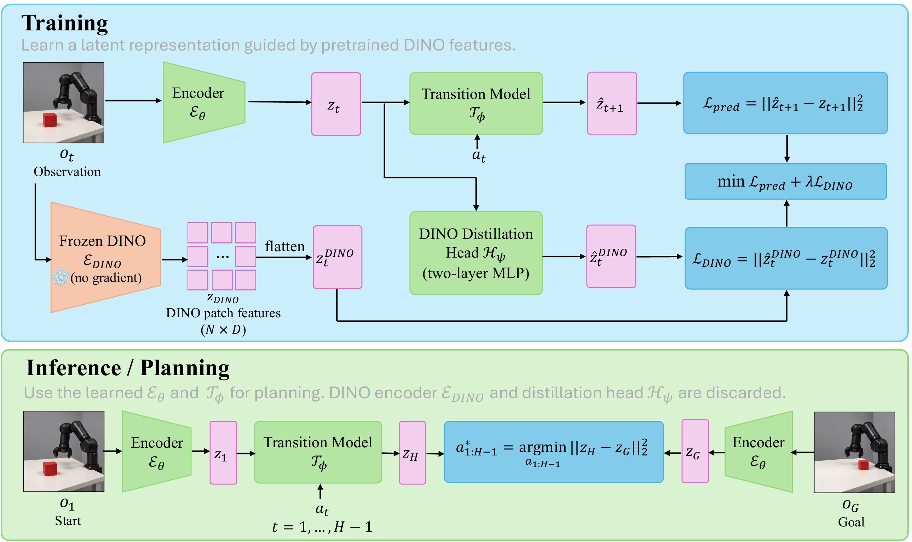
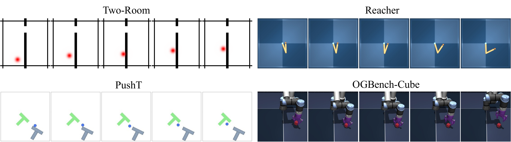
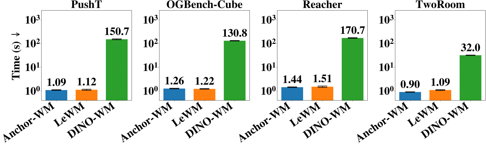
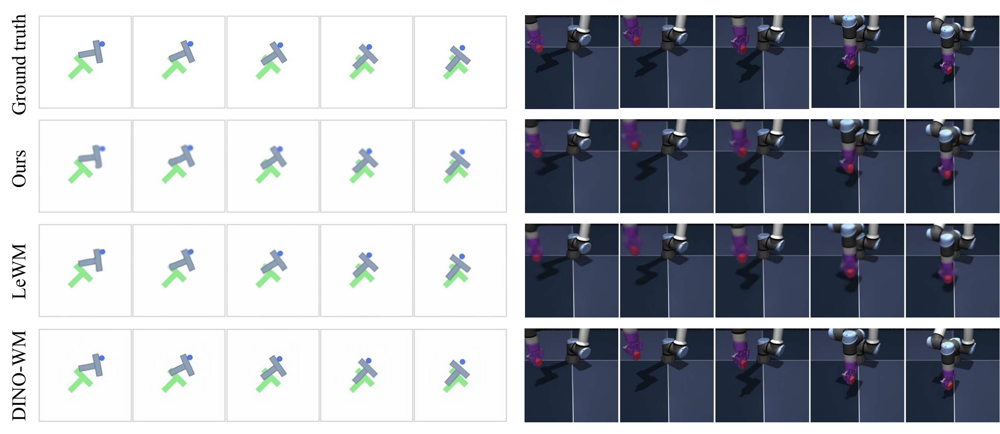

TL;DR. Anchor-WM is a latent world model for visual planning that uses frozen DINOv2 features as a training-time teacher rather than as the world-model state. A distillation head reconstructs DINO patch features from a compact 192-d latent, which prevents representation collapse and injects a pretrained visual prior. At inference the teacher is discarded, so planning runs in the compact latent: about 100× faster than DINO-WM, as fast as LeWM, and with the best average success rate across TwoRoom, Reacher, PushT and OGBench-Cube.
Abstract
A key design choice in visual world models is what information the latent state is encouraged to preserve. Models that learn a latent space with only a latent-prediction objective adapt to environment dynamics, but the predictive objective alone admits collapsed solutions and provides no explicit constraint on the visual information retained by the latent. Models built directly on pretrained visual features inherit a strong visual prior, but tie prediction and planning to a frozen state space. We propose Anchor-WM, which instead uses pretrained visual features as a teacher for learning a compact latent state rather than as the world-model state itself. Anchor-WM learns this compact latent with action-conditioned dynamics, while distilling the dense DINO representations through a training-only distillation head. This encourages the compact latent to retain visual information captured by the pretrained representation while discouraging representational collapse. At inference, the DINO encoder and distillation head are discarded, allowing prediction and planning to operate entirely in the learned latent space. Anchor-WM achieves the best average success rate across the four evaluated environments while enabling substantially faster planning than world models operating directly on DINO patch features. These results show that pretrained visual features can effectively guide world-model learning without defining the state space used for prediction and planning.
Method

Latent world model. An encoder $\mathcal{E}_\theta$ (ViT-Tiny) maps an image $o_t$ to a compact latent $z_t \in \mathbb{R}^{192}$. A transformer transition model $\mathcal{T}_\phi$ (action-conditioned via AdaLN) predicts the next latent from a context window, $\hat{z}_{t+1} = \mathcal{T}_\phi(z_{t-K+1:t}, a_{t-K+1:t})$, trained with $\mathcal{L}_{\mathrm{pred}} = \|\hat{z}_{t+1} - z_{t+1}\|_2^2$. On its own this objective admits a collapsed solution: a constant latent predicted perfectly.
DINO as teacher, not state. A two-layer MLP distillation head $\mathcal{H}_\psi$ reconstructs the full, flattened DINOv2 patch features $z^{\mathrm{DINO}}_t \in \mathbb{R}^{196 \times 384}$ from $z_t$: $\mathcal{L}_{\mathrm{DINO}} = \|\mathcal{H}_\psi(z_t) - z^{\mathrm{DINO}}_t\|_2^2$. Because a constant latent cannot predict observation-dependent DINO features, this rules out collapse, while the learnable head lets $z_t$ keep its own dimensionality and structure. The total loss is $\mathcal{L} = \mathcal{L}_{\mathrm{pred}} + \lambda \mathcal{L}_{\mathrm{DINO}}$.
Planning. The Cross-Entropy Method (CEM) searches for the action sequence whose predicted terminal latent is closest to the encoded goal, $\min_{a} \|\hat{z}_{t+H} - \mathcal{E}_\theta(o^{\mathrm{goal}})\|_2^2$, with MPC-style replanning. The deployed model has about 16.4M parameters; DINOv2 (22M) and the distillation head are training-only.
How Anchor-WM Differs from DINO-WM and LeWM
| DINO-WM | LeWM | Anchor-WM (ours) | |
|---|---|---|---|
| Role of pretrained features | World-model state | Not used | Training-only teacher |
| Planning state | 196 × 384 patch tokens | 1 × 192 | 1 × 192 |
| Anti-collapse mechanism | Frozen encoder | SIGReg regularizer | DINO feature distillation |
| DINOv2 needed at inference | Yes | No | No |
| Planning time, PushT (s) | 150.7 | 1.12 | 1.09 |
| Average success, 4 envs (%) | 76.6 | 79.9 | 84.7 |
Results

Planning success
Success rate (%) with the goal 25 steps ahead along an expert trajectory and a 50-step budget. Anchor-WM has the highest average success (84.7%), ties DINO-WM on TwoRoom and is best on Reacher, while planning in a latent two orders of magnitude smaller than DINO-WM.
| Method | Latent size | TwoRoom | Reacher | PushT | Cube | Average |
|---|---|---|---|---|---|---|
| Predictive only | 1×192 | 35.2±2.2 | 10.6±5.3 | 3.2±1.1 | 46.5±2.9 | 23.9 |
| PLDM | 1×192 | 93.0±2.0 | 69.5±5.8 | 71.8±6.1 | 51.2±1.6 | 71.4 |
| LeWM | 1×192 | 86.1±1.8 | 78.4±5.7 | 90.4±4.3 | 64.8±2.1 | 79.9 |
| DINO-WM | 196×384 | 99.6±0.9 | 67.2±1.8 | 65.2±6.6 | 74.4±2.6 | 76.6 |
| DINO-WM (CLS) | 1×384 | 59.3±1.7 | 45.2±3.4 | 37.8±5.6 | 50.2±3.8 | 48.1 |
| Anchor-WM (ours) | 1×192 | 99.6±0.9 | 82.4±4.3 | 84.8±5.4 | 72.0±4.2 | 84.7 |
Planning speed

Long-horizon and zero-shot planning
- Long horizon (goal 50 steps ahead, 100-step budget): Anchor-WM has the highest average success, 71.1% vs. 67.8% for DINO-WM and 65.2% for LeWM, and is best on TwoRoom, Reacher and PushT.
- Zero-shot visual perturbations (unseen end-effector or object colors): Anchor-WM averages 61.9% vs. 48.5% for LeWM, showing that training-time DINO supervision transfers robustness to the compact latent; DINO-WM, which keeps DINOv2 at test time, remains stronger (74.5%).
What the latent captures

Ablations
- Patch vs. global target: distilling the full DINO patch grid beats distilling the CLS token in every environment (e.g. Reacher 82.4 vs. 54.7, Cube 72.0 vs. 49.6).
- MSE vs. cosine: MSE distillation beats cosine in every environment; keeping feature magnitude helps.
- Distillation vs. REPA-style alignment: reconstructing DINO features from the final latent beats aligning intermediate (layer-8) encoder features with DINO (e.g. TwoRoom 99.6 vs. 50.0).
FAQ
- What is Anchor-WM?
- A compact latent world model for visual planning, from "Pretrained Features as Teachers, Not States: Compact Latent World Models for Visual Planning" (Wang, Lin, Böhmer, Alonso-Mora, 2026). It learns a 192-d latent with action-conditioned dynamics and uses frozen DINOv2 patch features only as a training-time distillation target.
- How can DINO-WM planning be made faster?
- Plan in a compact learned latent instead of over 196×384 DINOv2 patch tokens, and use DINO features only to supervise that latent. Anchor-WM does this and plans about 100× faster than DINO-WM (e.g. 1.09 s vs. 150.7 s on PushT) with a higher average success rate (84.7% vs. 76.6%).
- How is Anchor-WM different from LeWM?
- Both plan in a 192-d latent with a JEPA-style predictor. LeWM prevents collapse with the SIGReg Gaussian regularizer; Anchor-WM prevents it by distilling DINOv2 patch features into the latent, which also adds a pretrained visual prior. Anchor-WM is better on average (84.7% vs. 79.9%), in long-horizon planning (71.1% vs. 65.2%) and under unseen visual perturbations (61.9% vs. 48.5%).
- How do you prevent representation collapse in a JEPA world model?
- Anchor-WM's answer: require the latent to reconstruct observation-dependent features from a frozen pretrained encoder. A constant latent cannot do that, so collapse is ruled out without EMA targets, stop-gradients or distributional regularizers.
- Does Anchor-WM need DINOv2 at inference?
- No. The DINOv2 teacher and distillation head are discarded after training; the deployed model is about 16.4M parameters.
- Why not align intermediate features with DINO, like REPA?
- We tried. Reconstructing DINO features from the final latent through a distillation head clearly beats REPA-style alignment of layer-8 features in all four environments.
- What are the limitations?
- Anchor-WM can inherit biases of its DINO teacher, and the evaluation covers four simulated offline visual-control environments; real-robot and longer-horizon settings are future work.
BibTeX
@article{wang2026anchorwm,
title = {Pretrained Features as Teachers, Not States: Compact Latent World Models for Visual Planning},
author = {Wang, Yanbo and Lin, Nan and B{\"o}hmer, Wendelin and Alonso-Mora, Javier},
journal = {arXiv preprint arXiv:2610.23984},
year = {2026}
}